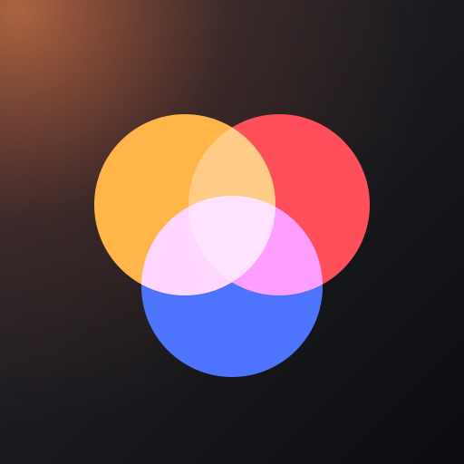

Ace
Looks

Film looks for your photos
54 film and camera looks. Full resolution, and your photos never leave your phone.
Film camera
Choose photos
Continue editing
Use my phone's camera app
Install on iPhone
Tap Share
⬆
below, then
Add to Home Screen
. It opens full screen like an app.
Recent
Clear
Original
Hold the photo to see the original
Looks
Adjust
Effects
Strength
100%
Save all
Save
AUTO
AUTO
PRO
HDR
NIGHT
Hold still…
Swipe to change look · Tap to focus · Pinch to zoom
Original
Swipe for another look · Hold to see the original